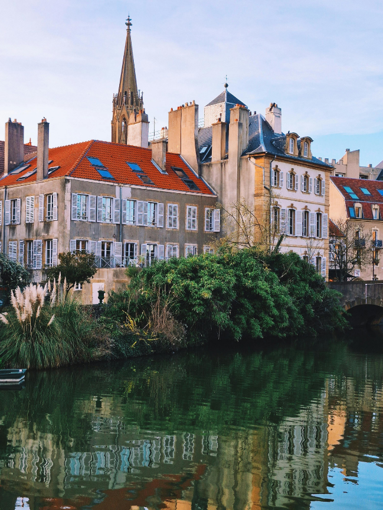
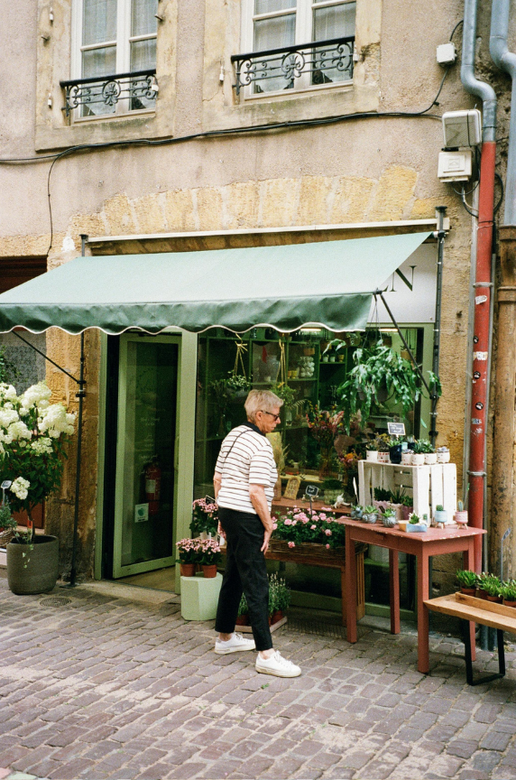
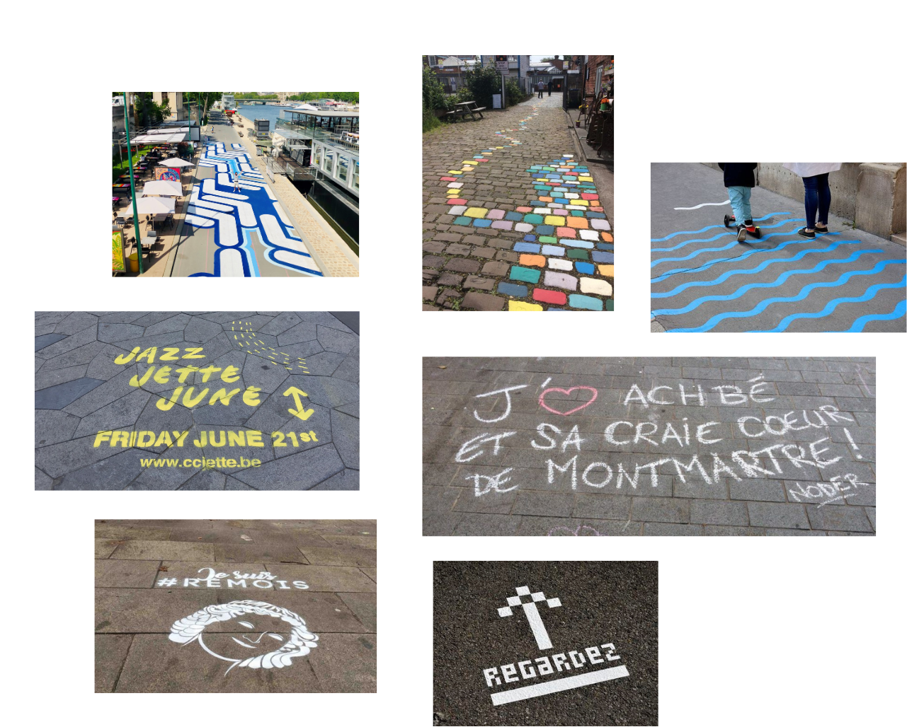
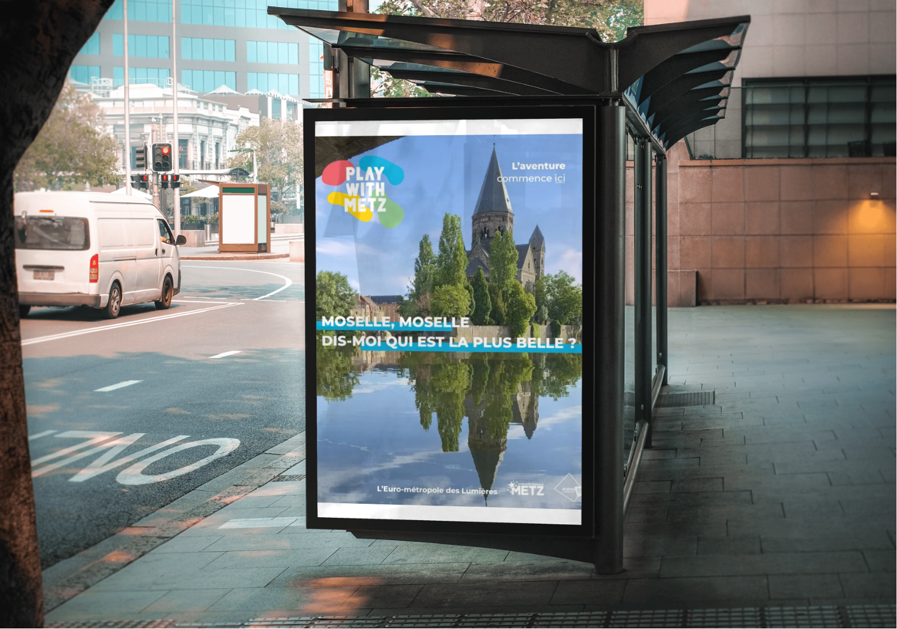
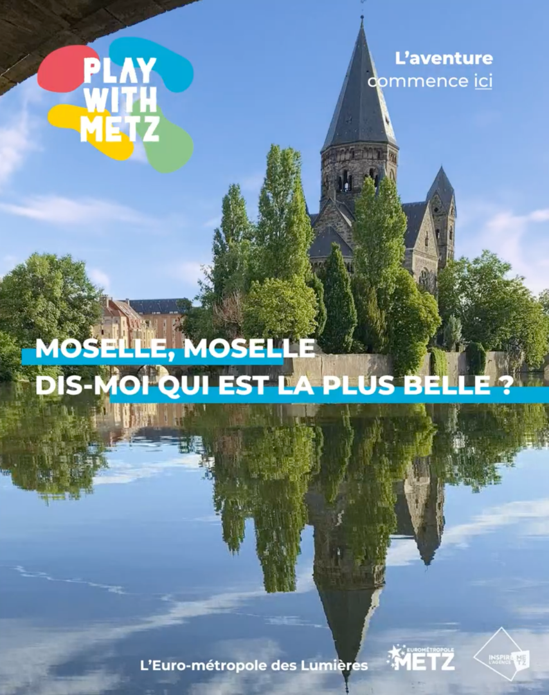
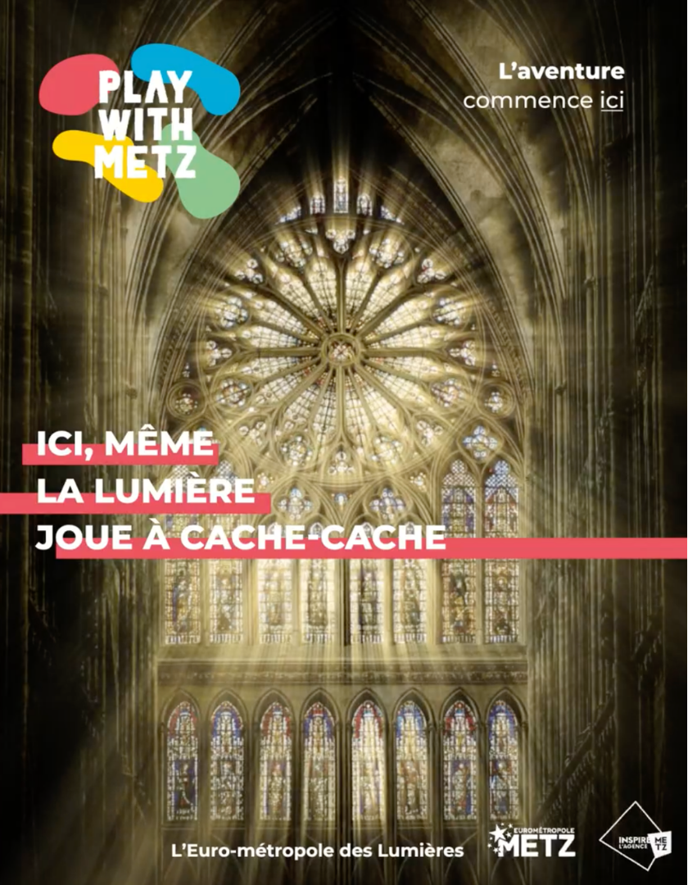

comme scène,
les rues
comme affiche
Metz, ville d’art et d’histoire aux bords de la Moselle — architecture dorée, cathédrale de lumière, espaces verts généreux. Un cadre qui n’a pas besoin d’être inventé — juste révélé.


La ville
comme terrain
de jeu.
L’idée centrale : ne pas seulement communiquer sur les événements, mais intégrer la communication dans l’espace urbain lui-même. Le street art éphémère transforme chaque mur, chaque sol, chaque coin de rue en invitation à la fête.
Des interventions visuelles disposées aux carrefours stratégiques de la ville créent un parcours de découverte qui surprend et donne envie de déambuler. Metz devient elle-même le média.

Tu connais
le Graouilli ?
Serpent monstrueux sorti des ruines de l’Amphithéâtre romain, le Graouilli est la créature fondatrice du folklore messin. Sa légende traverse les siècles — mais la connaîs-tu vraiment ?


Affiche 01
Affiche 02